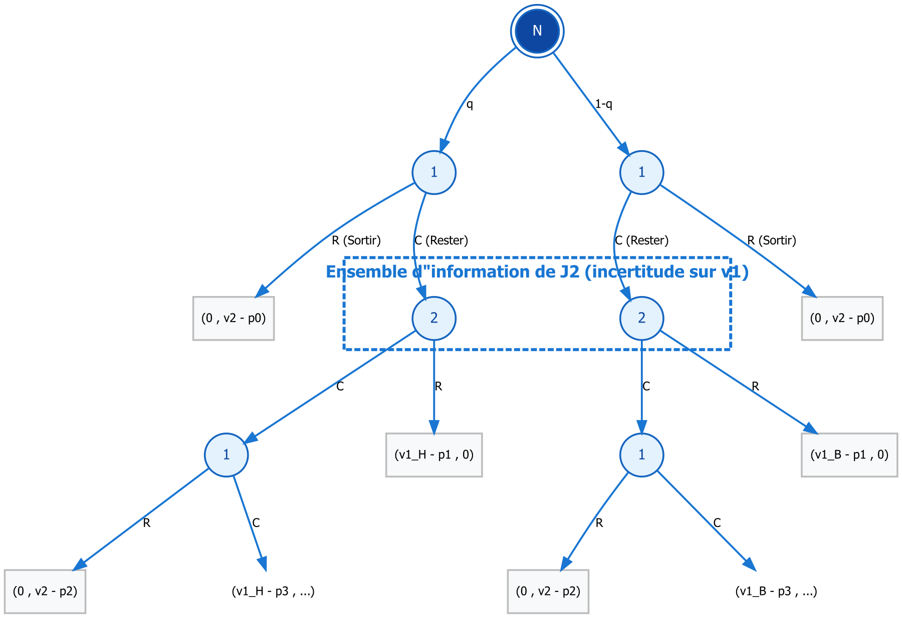

3 Modélisation
Cette partie a pour objectif de formaliser une enchère séquentielle portant sur un bien unique à l’aide des outils de la théorie des jeux dynamiques à information incomplète.
3.1 Joueurs, types et information initiale
Le jeu met en présence deux enchérisseurs, notés \(i = 1,2\).
Le joueur 1 est caractérisé par une valeur privée pour le bien, notée \(v_1\), qui peut prendre deux valeurs : \[ v_1 \in \{v_{1H}, v_{1B}\}, \quad v_{1H} > v_{1B}. \]
La valeur \(v_1\) est tirée par la Nature au début du jeu selon la distribution : \[ P(v_1 = v_{1H}) = q, \quad P(v_1 = v_{1B}) = 1 - q. \]
Le joueur 1 observe parfaitement sa valeur.
Le joueur 2 ne connaît pas la réalisation de \(v_1\) et ne dispose que de la distribution a priori.
3.2 Chronologie et structure des décisions
L’enchère se déroule selon une succession d’étapes indexées par des niveaux de prix croissants \(p_0 < p_1 < p_2 < \dots\).
À chaque étape : - un prix courant est annoncé ; - un joueur désigné prend une décision ; - il choisit entre : - rester dans l’enchère (\(C\)), - se retirer définitivement (\(R\)).
Les décisions de retrait sont publiquement observables.
L’enchère se poursuit tant qu’au moins deux joueurs restent actifs.
3.3 Représentation extensive et ensembles d’information
L’enchère peut être représentée sous la forme d’un arbre du jeu, dont la structure est donnée par le schéma présenté ci-dessous.

- Le nœud initial correspond au tirage du type de J1 par la Nature.
- Les nœuds de décision représentent les choix successifs des joueurs aux différents niveaux de prix.
- Les feuilles correspondent aux issues de l’enchère (retrait d’un joueur ou poursuite du processus).
À l’étape où le joueur 2 intervient, celui-ci ne connaît pas la valeur de \(v_1\).
Les nœuds correspondants sont donc regroupés dans un ensemble d’information, reflétant son incertitude sur le type de J1.
3.4 Stratégies et croyances
Une stratégie est un plan contingent, précisant pour chaque joueur :
- l’action à entreprendre à chaque nœud de décision,
- conditionnellement à l’historique observé et, le cas échéant, à l’information privée.
Les croyances du joueur 2 portent sur la valeur de \(v_1\) et sont définies sur son ensemble d’information.
Elles sont notées :
\[
\mu_t = P(v_1 = v_{1H} \mid h_t),
\]
où \(h_t\) désigne l’historique observé à l’étape \(t\).
Ces croyances évoluent au cours de l’enchère, à mesure que les décisions observées restreignent l’ensemble des types possibles.
3.5 Concept de solution
Le jeu ainsi défini est analysé à l’aide du concept d’Équilibre Bayésien Parfait.
Ce concept impose :
- que les stratégies soient séquentiellement rationnelles à chaque nœud du jeu ;
- que les croyances soient cohérentes avec les stratégies et mises à jour conformément à la règle de Bayes.
La section suivante est consacrée à l’analyse de cet équilibre et à la caractérisation des comportements stratégiques qu’il induit.